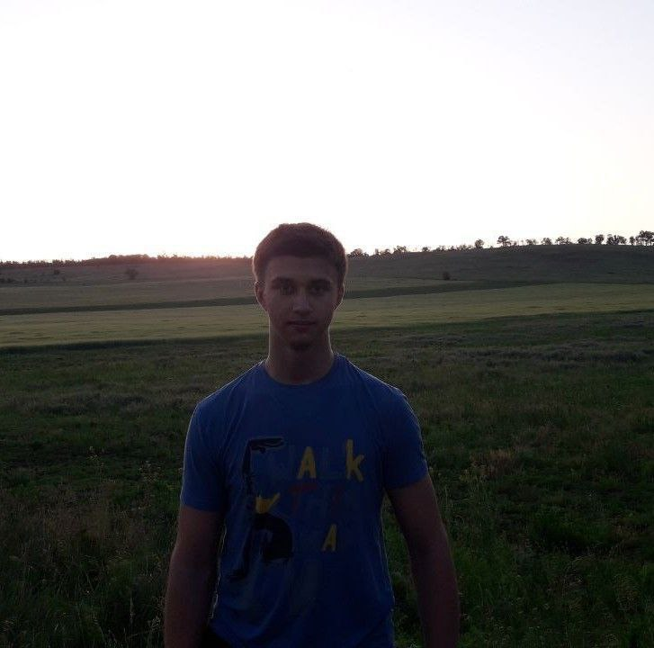

LOGO
Привіт!
Junior Frontend developer Привіт! Я Яків, молодий та мотивований frontend developer. Маю знання HTML/CSS та елементарну базу JavaScript, а також досвід роботи з технологією Bootstrap. Мені 20 років, і хоча у мене немає професійного досвіду, я готовий взятися за виклики. Мій рівень англійської - Intermediate, здатний розмовляти та писати простими фразами. Я комунікабельний та легко знаходжу спільну мову з колегами. Здатний адаптуватись до різних умов та розтавляти пріоритети. Маю вміння будувати зв'язки з людьми. Мотивований та відповідальний. Я мрію спробувати себе у сфері IT та готовий розвиватись.
